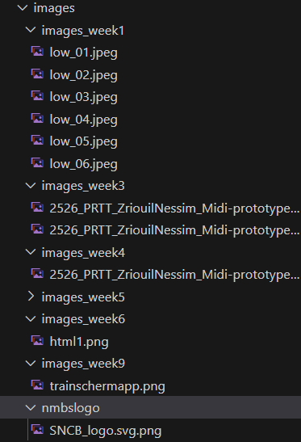
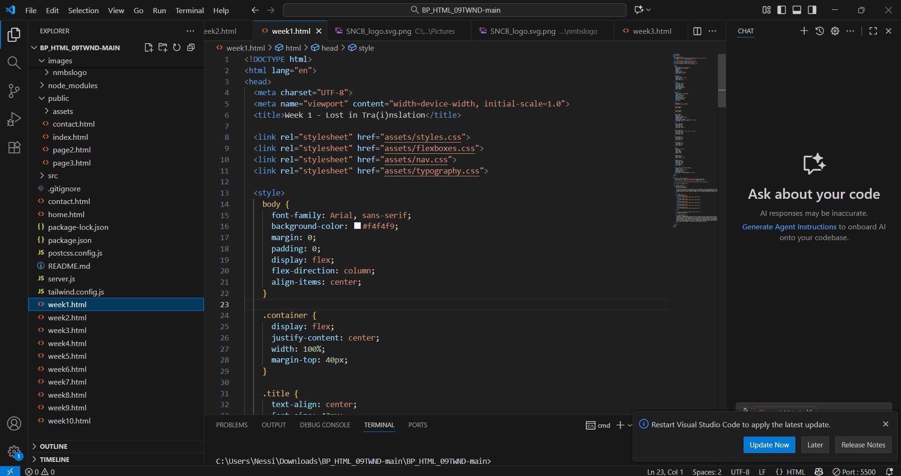

Hard deadline & HTML afronden
In deze les kregen we een harde deadline tegen het einde van de sessie om onze HTML-pagina's volledig af te werken met alles wat we tot nu toe hadden ontwikkeld. Het doel was om alle voorgaande weken netjes samen te voegen en een overzichtelijk resultaat te presenteren.
Ik heb alle foto's georganiseerd in duidelijke mappen per week en ervoor gezorgd dat elke week overzichtelijk wordt weergegeven. Met de hulp van de leraren, ChatGPT en mijn eigen kennis heb ik een werkend resultaat neergezet. Hoewel het nog niet volledig af is, laat het zien hoe de website eruit zal zien bij de definitieve versie.
Hieronder zie je hoe ik de structuur van mijn HTML-pagina had opgebouwd en hoe de content georganiseerd werd. Dit gaf een duidelijk overzicht van de layout en hoe elementen zoals afbeeldingen, tekstblokken en knoppen werden geplaatst.
In het laatste deel van de les heb ik alles overgezet naar Tailwind en gecontroleerd of alles correct werkte. Ik heb de klassieke CSS-structuur gecombineerd met Tailwind utility classes, zodat ik de voordelen van beide kon gebruiken. Dit laat zien hoe mijn site steeds verder is verfijnd en klaar is om interactief gebruikt te worden.